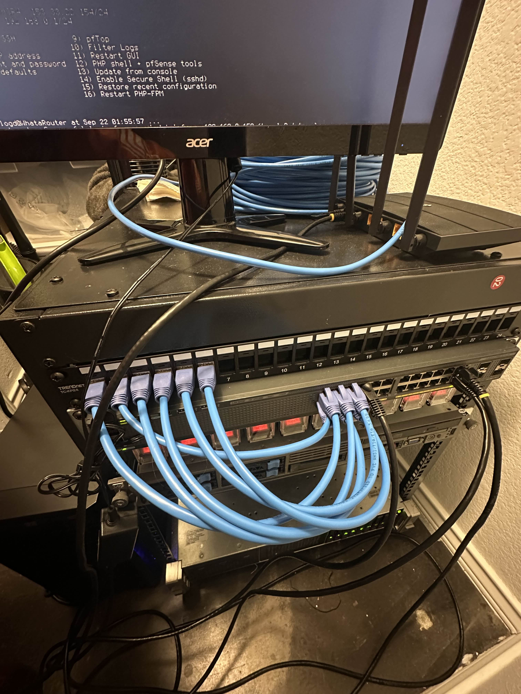

A retired Dell R720 and a plan.
Picked up an R720 off eBay — dual Xeon E5-2670v2, 128GB of DDR3 ECC, 8× 2TB SAS. Not fast, but dense and cheap per core. Added a dual-port 10GbE NIC for the storage network.
Noise was the first problem. Stock fans scream at 50%. IPMI fan curve, plus a pair of Noctua NF-A12-25 pulling from the front, dropped it to tolerable for a garage.
Proxmox 8 with ZFS — because snapshots are cheap.
$ zpool create -o ashift=12 tank raidz2 sda sdb sdc sdd sde sdf
$ zfs create tank/vm
$ zfs create tank/ct
$ zfs set compression=lz4 tank
$ pveperf /tank
CPU BOGOMIPS: 152000
FSYNCS/SECOND: 3842
DNS EXT: 12.01 ms
VLANs and a Cisco 3560-X so the lab can't talk to anything important.
Four VLANs on the Cisco switch:
- 10 — management (Proxmox, iDRAC, switch)
- 20 — lab internal (targets, pivots)
- 30 — detonation (malware triage, blackhole-routed)
- 40 — operator (my box, SIEM)
pfSense edges routes between operator + lab. VLAN 30 has zero route to anywhere outside — packets die at the firewall.

Targets by template — clone, detonate, destroy.
Ansible playbooks that spin up a target profile in under three minutes:
$ ansible-playbook -i lab.ini targets/windows-domain.yml \
-e domain=blackbird.lab -e users=30
PLAY [Provision Windows AD target]
TASK [hypervisor : clone template] ok
TASK [dns : configure] changed
TASK [users : seed 30 domain accounts] changed
TASK [siem : enroll hosts in wazuh] changed
PLAY RECAP
targets: ok=8 changed=5 unreachable=0 failed=0
Detection pipeline — because red only matters if blue can see.
Sysmon → Wazuh → Grafana dashboards. Every detonation emits telemetry I can later diff against real-world campaigns.
What's next: a containerized C2 range, and automated MITRE technique coverage reporting.